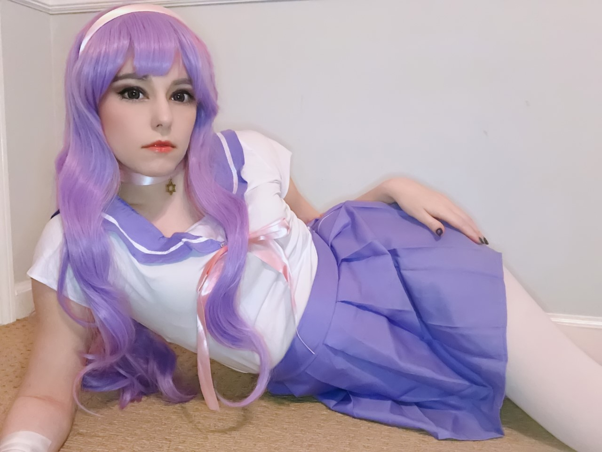

(Stokkete/ Envato Elements and Sergey Zolkin/ Unsplash)
After losing their job in the wake of COVID-19's mass layoffs, 22-year-old Erin Riley, who uses gender-neutral they/them pronouns, felt directionless. To pay their bills, they started posting pornographic content on the OnlyFans website. The subscription-based platform charges users a monthly fee of anywhere from a couple of dollars to $20 or more to view content and connect with its creators.
With the pandemic making face-to-face contact risky, personalized content is infinitely more enticing to those starved for physical and emotional intimacy. The use of OnlyFans has skyrocketed. Within months, Erin had accumulated hundreds of followers and a steady source of income but the intersection of business and intimacy can be difficult to navigate. While some content creators find the OnlyFans platform liberating, others find it debilitating.
What is OnlyFans?
Founded in 2016 by Timothy Stokley, OnlyFans is often described as, "Instagram but for porn." Creators include models, influencers, celebrities, porn stars, and everyday people posting images and videos of everything from day-to-day life to explicit content.
 Riley's OnlyFans content - cosplaying as DC comic book character Raven
Riley's OnlyFans content - cosplaying as DC comic book character Raven
In addition to accessing creators' feed, subscribers can pay to receive private messages and send tips. For an additional fee, some creators will produce material specifically tailored for individuals. For many users, OnlyFans is a platform more intimate than pornography. Subscribers feel that they catch a glimpse into the real lives of the people they follow. In these one-sided, or parasocial, relationships, followers bond with performers even though they have never met outside of a computer screen.
The average earnings on the site are $180 per month, but with stories of some individuals bringing in over $20,000 a month, 7,000-8,000 hopeful creators continue to sign up each day. The number of people signing in to view OnlyFans content has exploded too. According to Influencer Marketing Hub, OnlyFans has 50 million registered users.
Google searches for "OnlyFans" have increased steadily since March 2020. A value of 100 on the chart below reflects the largest number of searches for the term. The site has stepped into mainstream culture as celebrities like Cardi B, Tyler Posey, and Bella Thorne have joined. Since the pandemic began, OnlyFans has even been referenced in popular songs like Megan Thee Stallion's "Savage."
Data Source: Google Trends "Numbers on the y-axis represent search interest relative to the highest point on the chart. A value of 100 is the peak popularity for the term. A value of 50 means that the term is half as popular." Google searches of OnlyFans rose dramatically since the pandemic began.
Dr. Dulcinea Pitagora, a New York City-based psychotherapist and sex therapist, explains that OnlyFans, "provides a boundaried meeting place for people with common interests to safely interact with other people, and to charge for their time."
Pitagora notes OnlyFans, "provides real-time reciprocal exchanges (which) can be particularly meaningful for people who otherwise would watch recorded performances and therefore have no option for back-and-forth communication."
A User Perspective
 (Grzegorz Walczak/ Unsplash)
(Grzegorz Walczak/ Unsplash)
Josiah, who asked to remain anonymous for fear of reaction from friends and family, subscribes to multiple creators. He first visited the platform to help a friend working as a creator who was struggling financially. Once he explored more of what the platform had to offer, he began to enter the intimate lives of others, "people that I found myself infatuated with."
"There have been conversations that cause me to forget the kind of buyer/seller relationship," he explains. "There are times when my brain goes 'obviously they are being sweet and attentive because I'm paying.' However, most of the people I message on here are all very kind and attentive."
What Are Parasocial Relationships?
Parasocial relationships existed well before the advent of screens. "It goes back to ancient times, people had celebrity crushes and celebrity followings," said Dr. Riva Tukachinsky of Chapman University who specializes in media psychology.
Technology has changed parasocial relationships by making public figures more accessible. During the days of "Beatlemania," fans had to wait for newsletters in the mail or travel to attend a concert. With the development of platforms like YouTube, Instagram, and SnapChat, these one-sided relationships have taken on a new form. Creators are accessible in a way they never were before.
"Now you can potentially get in touch with one of your favorite celebrities," said Dr. Jaye Derrick of the University of Houston, who researches the influence of parasocial relationships on well-being. "You feel psychologically close to this person and to some extent, you project what you think they are like onto them and you feel like you know who they are."
This blending of reality and fantasy can be even more confusing when celebrities respond and develop dialogue with viewers. With the rise of platforms like OnlyFans, this phenomenon is expanding into the world of sex work.
Parasocial Relationships from the Creator Perspective
The concept of parasocial relationships is all too familiar to Megan, who wishes to remain anonymous for fear of alienating her followers. Megan is a member of pop idol group who creates content for OnlyFans. The entertainment industry depends on what she describes as "manufactured performers."

Megan uses creative themes for content for her OnlyFans account. Here she poses in an an anime-themed costume.
An aspect of this involves keeping your audience at arm's length. The group sets firm boundaries to avoid the potential of parasocial relationships with their audience.
"We try to keep personal information a secret," Megan explains, "but things like favorite shows, favorite food, that's more public knowledge because of the importance of - it sounds bad - but this 'illusion of closeness' with people."
"People can absolutely become more personally invested - and feel like there is a deeper relationship there than there actually is - when you're open about where you come from and what you deal with." The key, in Megan's opinion, is to maintain that "illusion of closeness" - in which you don't let your audience members take too close of a look into your troubles and everyday life.
These sorts of boundaries are present in the cosplay and lingerie photos she posts on OnlyFans. She says directing the photo shoots makes her feel equal parts empowered and confident. Megan draws the line, enjoying "looking sexy, but not being sexual."
OnlyFans creator Rose, who identifies as non-binary, and wished to remain anonymous out of concern over job security, finds that balance harder to achieve and says that their experience with the platform is taxing their mental health. Rose started with OnlyFans last April, a decision they remained hesitant about having lost a job when their previous employers found out that they were live streaming sexually explicit content on the web. When the pandemic took their more recent employment away and the possibility of not being able to pay their New York City rent loomed ever closer, Rose turned to OnlyFans. They've made $80 so far while fielding upsetting comments asking them to look more feminine.
"It's emotionally draining, even though it's not a live situation. It makes it really rough, when I intentionally try to feminize myself just for the sake of making money, because I know it'll attract people."
More from the Creators
Since joining the platform last March, Riley has earned just over $4,000, enough to help with a cross-country move to California. Despite landing a job since the move, they've kept posting content to assist with financial security.
The peak in Riley's earnings directly coincides with the persistence of their advertising on platforms such as Instagram and TikTok
Income based on the services of OnlyFans model, Erin Riley's data. Most of their income came from subscriptions and messages.
While most of their earnings come through monthly subscription fees, a substantial amount stems from the platform's messaging feature, where fans can pay extra to chat with creators. Surprisingly, Riley explains that the content of these messages aren't mainly sexual.
"I do the same for them anytime they offer support for me, from an emotional and mental standpoint," Riley said. "Rather than just financial, because it really does help a lot to have that support. So I try to offer that as much as I possibly can for them and a lot of them do that for me as well."
Riley doesn't feel that there's a social stigma to their work on OnlyFans. Riley ensures that the people surrounding them "are going to be supportive of everything I do."
OnlyFans creator, Jen, 30, came to Boston to work as a manager at a restaurant. Then COVID-19 hit in early 2020, she lost her job and OnlyFans presented an option for her like millions of others struggling: a way out of economic insecurity. Money wasn't the only reason, though.
"I find a lot of value in the fun of getting to share my body with total strangers. I appreciated their voyeuristic part in my life," she said.
It reminds her of online conversations she had with adults while still in middle school. Those conversations were sexual and "totally inappropriate," but as she put it, "I thought it was fucking awesome. Like, this is so cool. I'm never gonna meet these people. This is totally harmless."
The chats were liberating for Jen, raised in a conservative family. "It was also super fun to explore sexuality in a way that was completely unheard of in my Christian upbringing. So I feel like the disconnect allows us in a way to kind of connect with this inner desire that we normally can't really express. I can't be walking around in my underwear and being like, 'I'm hot.' You know what I mean? But on the internet, I could."
"For my experience, I was very aware of the disconnect [with her OnlyFans audience]. But I still crave connection, maybe not necessarily romantic, but it felt like it gave me an agency to kind of control that connection, in a way, with strangers."
Jen considers OnlyFans sex work, since a portion of interactions are sexual. "I think it's been a slowly growing trend to destigmatize sex work and [for] sex workers having rights," she says "It's a job. It's performance, it's maintenance. It can be dangerous and it cannot be in so many ways. OnlyFans kind of keeps people safe. It's a safer option for sex work."
Overall, she liked the opportunity OnlyFans gave her to set her own schedule and payment rates comparing it to a streaming service like Disney Plus. But like a streaming service, the need to constantly produce material started to weigh on her as well as the need for "sexy" clothing and upgraded camera equipment that could be used to entice more customers.
"I felt this weird pressure to have to buy these things to perform for total strangers or my friends. It kind of took out the creativity and curiosity for me. Just kind of started feeling like, 'Oh, they're so many people that are doing this really well,'" she said.
More on the User Experience
Josiah explains that he considers himself a "mom friend" to the creators. He says he is motivated to support creators "always wanting to help friends and those I care about."
Authenticity in a connection is key to Josiah. "The ones I return to time and time again . . . are the ones who are genuine. . . . I also think the desire to feel needed, wanted, etc, has been amplified by the pandemic. So knowing that I can find methods with which to feel that again draws me back to the site over and over."
Although most creators seem genuine, Josiah admits that there are those who "only, understandably, are after your money." He described those types of creators as "predatory," taking advantage of those aforementioned moments of weakness and treating him "like a cash cow."
Looking Forward
"A lot of people are relying on these parasocial relationships to help them get through and to have connections," says Derrick. "Parasocial relationships tend to be good for people . . . (and) protect us from feelings of loneliness and rejection."
Pitagora believes the site's popularity will outlast the pandemic "Online platforms like OnlyFans have been popular with certain groups of people (like sex workers and others who prefer online connections to in-person) as long as the platforms have existed. Now that these platforms have gained traction among wider audiences, they'll likely be more popular than they were before, but not quite as highly trafficked once people can safely meet in-person again."